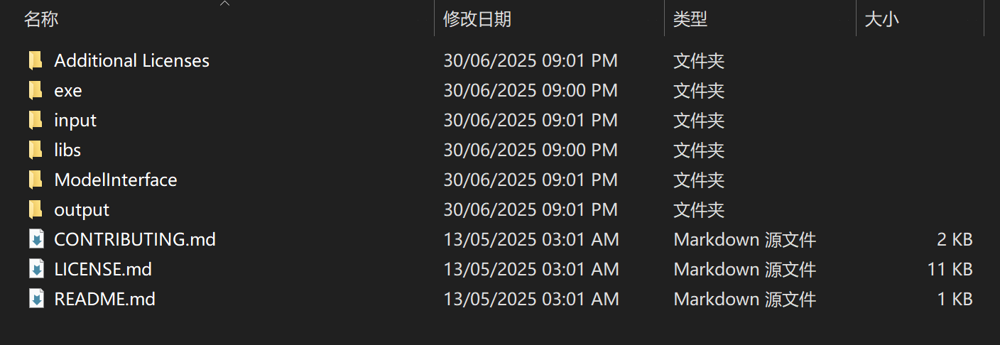
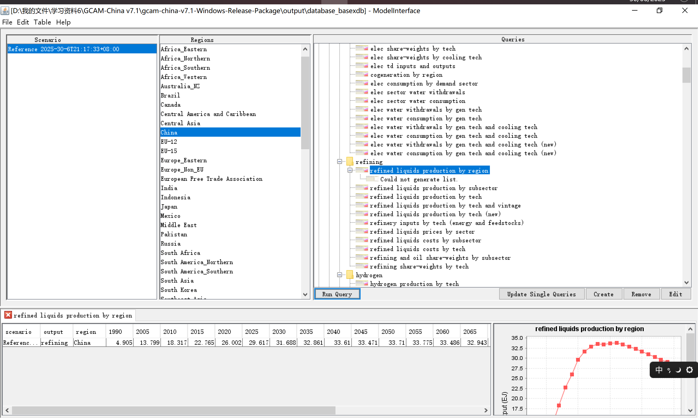

二、GCAM-China 使用入门#
以下内容参考自GCAM官方文档、GCAM-China官方文档。
这里给出GCAM-China模型最新版本下载链接，下载名字较长的压缩包如gcam-china-v7.1-Windows-Release-Package，GitHub中直接提供的，名字较短的压缩包用于编写模型，似乎没有运行程序。
2.1 GCAM-China 基准情景#
将下载的压缩包进行解压，即可直接使用GCAM-China模型。

初次使用该模型，只需要用到exe，ModelInterface，output三个文件夹。
其中：
exe文件夹中包含了运行GCAM-China模型所需要的配置文件，点击run-gcam.bat文件即可运行。需要注意的是，在运行模型之前，需要电脑已经配置了Java环境，关于如何配置Java环境，会在稍后给出简单的说明。
GCAM-China运行的过程中，会在以下几个页面进行停留：... XML parsing complete. Starting new scenario: Reference Mon Jun 30 21:18:15 2025:WARNING:Hector::Logger::printLogHeader: hector version 3.2.0 Mon Jun 30 21:18:15 2025:WARNING:Hector::Logger::printLogHeader: hector version 3.2.0 SEVERE ERROR:geothermal in China is not related to any other activities. SEVERE ERROR:offshore wind resource in China is not related to any other activities. SEVERE ERROR:onshore carbon-storage in China is not related to any other activities. Starting a model run. Running all periods. Model run beginning. Period 0: 1975 ...
... Period 21: 2100 Model solved normally. Iterations period 21: 95. Total iterations: 3074 All model periods solved correctly. Mon Jun 30 21:32:26 2025:WARNING:Hector::Logger::printLogHeader: hector version 3.2.0 Model run completed. ...
Model run completed. Printing output Starting output to XML Database. D:/我的文件/学习资料6/GCAM-China v7.1/gcam-china-v7.1-Windows-Release-Package/exe/.basex: writing new configuration file. Model run completed. Model exiting successfully. 请按任意键继续. . .
直到出现
请按任意键继续之后，才可以关闭运行的界面。如果在Model run completed出现后就关闭界面，则会出现无法读取输出的情况。ModelInterface文件夹中包含了读取结果的文件，点击run-model-interface.bat文件后，左上角File-Open-DB Open，选择output文件夹中database_basexdb即可读取刚刚GCAM-China运行的基准情景(Reference)结果。 
Java环境配置#
XML parsing complete. Starting new scenario: Reference Mon Jun 30 21:18:15 2025:WARNING:Hector::Logger::printLogHeader: hector version 3.2.0 Mon Jun 30 21:18:15 2025:WARNING:Hector::Logger::printLogHeader: hector version 3.2.0 SEVERE ERROR:geothermal in China is not related to any other activities. SEVERE ERROR:offshore wind resource in China is not related to any other activities. SEVERE ERROR:onshore carbon-storage in China is not related to any other activities. Starting a model run. Running all periods. Model run beginning. Period 0: 1975 Model solved with last period’s prices.
Period 1: 1990 Model solved normally. Iterations period 1: 113. Total iterations: 114
Period 2: 2005 Model solved normally. Iterations period 2: 142. Total iterations: 255
Period 3: 2010 Model solved normally. Iterations period 3: 88. Total iterations: 342
Period 4: 2015 Model solved normally. Iterations period 4: 85. Total iterations: 427
Period 5: 2020 Model solved normally. Iterations period 5: 564. Total iterations: 991
Period 6: 2025 Model solved normally. Iterations period 6: 392. Total iterations: 1383
Period 7: 2030 Model solved normally. Iterations period 7: 223. Total iterations: 1605
Period 8: 2035 Model solved normally. Iterations period 8: 111. Total iterations: 1716
Period 9: 2040 Model solved normally. Iterations period 9: 170. Total iterations: 1885
Period 10: 2045 Model solved normally. Iterations period 10: 108. Total iterations: 1993
Period 11: 2050 Model solved normally. Iterations period 11: 110. Total iterations: 2102
Period 12: 2055 Model solved normally. Iterations period 12: 95. Total iterations: 2197
Period 13: 2060 Model solved normally. Iterations period 13: 94. Total iterations: 2290
Period 14: 2065 Model solved normally. Iterations period 14: 102. Total iterations: 2391
Period 15: 2070 Model solved normally. Iterations period 15: 107. Total iterations: 2497
Period 16: 2075 Model solved normally. Iterations period 16: 97. Total iterations: 2594
Period 17: 2080 Model solved normally. Iterations period 17: 99. Total iterations: 2692
Period 18: 2085 Model solved normally. Iterations period 18: 96. Total iterations: 2788
Period 19: 2090 Model solved normally. Iterations period 19: 96. Total iterations: 2883
Period 20: 2095 Model solved normally. Iterations period 20: 97. Total iterations: 2980
Period 21: 2100 Model solved normally. Iterations period 21: 95. Total iterations: 3074
All model periods solved correctly. Mon Jun 30 21:32:26 2025:WARNING:Hector::Logger::printLogHeader: hector version 3.2.0 Model run completed. Printing output Starting output to XML Database. D:/我的文件/学习资料6/GCAM-China v7.1/gcam-china-v7.1-Windows-Release-Package/exe/.basex: writing new configuration file. Model run completed. Model exiting successfully. 请按任意键继续…